While Vision-Language Models (VLMs) excel at visual reasoning, generating structured, editable Scalable Vector Graphics (SVG) remains a fundamental challenge. Existing pipelines predominantly yield flat, semantically agnostic collections of paths, where editing a single object requires manually identifying its constituent paths. To address this, we propose a VLM-driven agentic framework for semantic compositional SVG generation. Our pipeline recursively parses visual scenes into semantic and geometric hierarchies via top-down decomposition, visual grounding, and prompt-driven amodal occlusion recovery, ensuring each component is geometrically complete. Furthermore, we introduce the Semantic SVG Benchmark with human-annotated semantic groups and novel sub-component metrics (Semantic Recall/Precision, PERE) to explicitly evaluate structural compositionality and functional editability. Experiments show that our natively predicted structures surpass the upper bounds of existing flat-generation methods in both grouping quality and editability, while maintaining state-of-the-art visual fidelity.
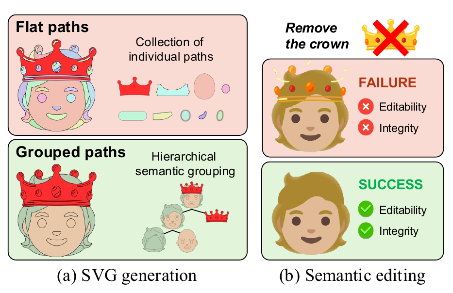
Flat paths vs. grouped paths.
(a) Prior SVG generation methods output a flat, unorganized collection of paths,
whereas our framework constructs a semantic-aligned hierarchical tree.
(b) Without a hierarchical semantic structure, downstream edits (e.g., removing the crown) fail
because individual paths are decoupled from human-interpretable concepts and the geometry
hidden behind the removed object is missing.
Our explicit semantic grouping encapsulates the entire target object into a single cohesive
<g> node and recovers the occluded background, enabling successful and intuitive manipulation.
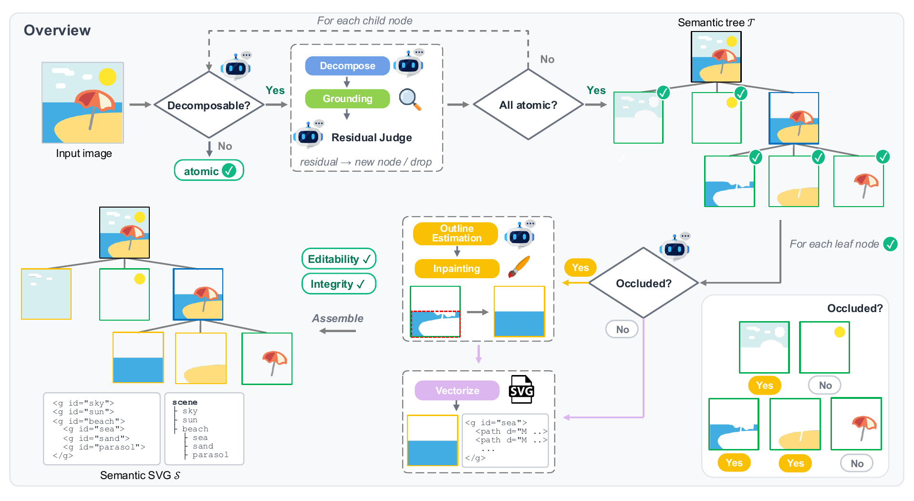
Overview of our VLM-driven agentic system for compositional SVG generation.
We reformulate image-to-SVG as a multimodal semantic parsing problem: an input image $\mathcal{I}$ is translated
into a hierarchical semantic tree $\mathcal{T}$ whose nodes are textual concepts with grounded regions,
and the final SVG $\mathcal{S}$ is compiled by nesting <g> groups that mirror $\mathcal{T}$.
A single VLM (Gemini-3-flash by default) assumes four cooperating roles
(Hierarchical Semantic Decomposer, Residual Judge, Occlusion Assessor, and Amodal Spatial Estimator)
and recursively invokes grounding, inpainting, and vectorization modules whose outputs constitute the final SVG.
(Top) Top-down VLM-driven decomposition. Starting from the root image, the Hierarchical Semantic Decomposer judges whether the current node is semantically decomposable. If so, it emits a parsing plan of child labels and bounding boxes ordered back-to-front; otherwise the node is marked atomic and becomes a leaf. The Semantic Grounding module (SAM 3) converts each (label, box) pair into a pixel mask. Any unassigned pixels are compiled into a residual image, and the Residual Judge either promotes them to a new semantic node or discards them as noise. The loop recurses on every child node until all branches terminate in atomic leaves.
(Bottom) Semantic completion and assembly.
Extracting foreground components leaves artificial holes in background elements.
For each leaf, the Occlusion Assessor decides whether true occlusion exists, and if so the
Amodal Spatial Estimator predicts a polygon outlining the complete shape of the component.
The region between this amodal polygon and the visible mask is filled by the Generative Inpainting
module (FLUX.1-Fill), conditioned on the semantic label.
Every completed component is converted into vector primitives by the Vectorization module (VTracer)
and assembled back-to-front into the semantic SVG, whose nested <g id="label"> hierarchy
mirrors the tree, yielding intuitively editable (Editability) and structurally complete (Integrity) outputs.
Extension to Text-to-SVG. The framework naturally extends to Text-to-SVG by cascading a text-to-image model (FLUX.1-dev or SD3.5-medium) with our pipeline: the synthesized image is fed in as the root image and parsed identically.
Existing benchmarks score only whole-image fidelity, so they cannot tell whether a generated SVG is organized into meaningful, manipulable parts. The Semantic SVG Benchmark is an evaluation set of 203 SVGs, each paired with a human-annotated hierarchical semantic tree: annotators recursively group the raw SVG paths into self-contained semantic entities (e.g., sea, parasol) and assign each group a textual label, until no meaningful decomposition remains. Samples are curated to contain substantial occlusion and overlap, so that trivial decomposition is impossible. At test time, the rendering of the ground-truth SVG is given as the input image, and the generated SVG is compared against the ground-truth tree at the group level: groups are rendered and scored with pixel MSE or DINO similarity.
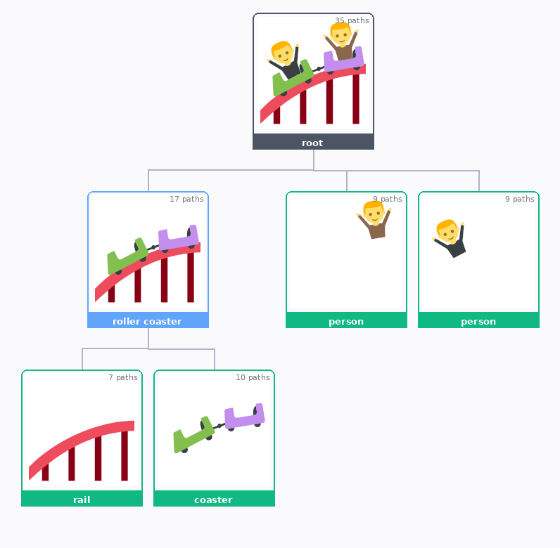
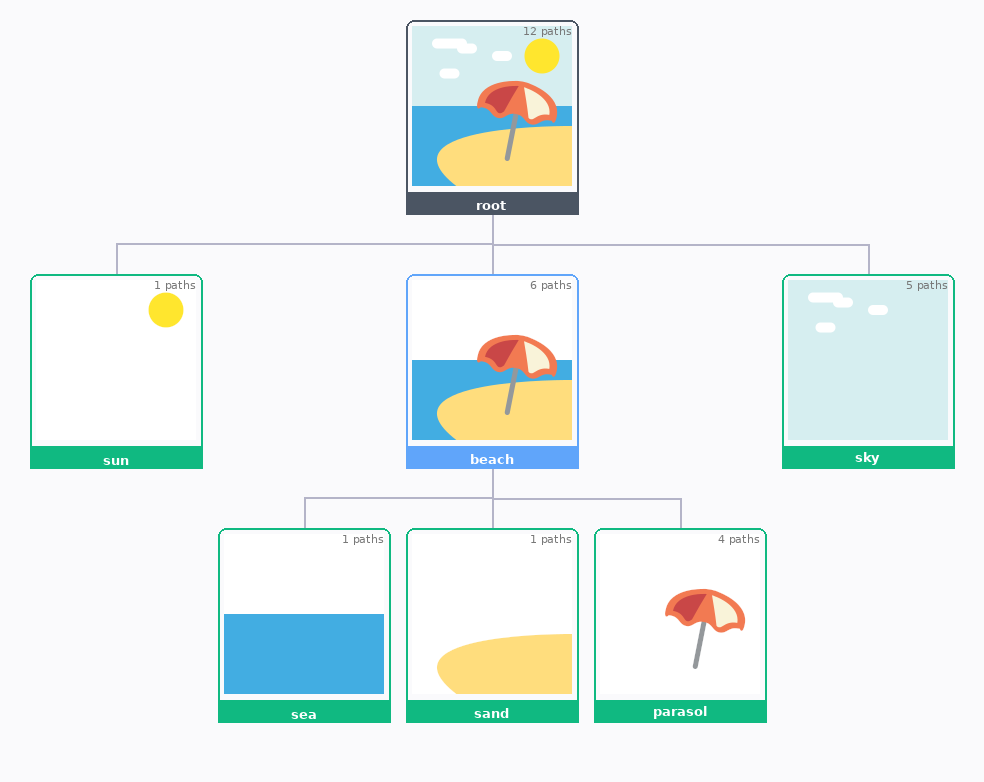
Examples from the Semantic SVG Benchmark. Each sample is an SVG whose raw paths are grouped into a hierarchical semantic tree with a textual label per node. Intermediate nodes (blue) are further decomposed, and leaf nodes (green) are semantically atomic entities; the number of raw paths assigned to each node is shown in its corner.
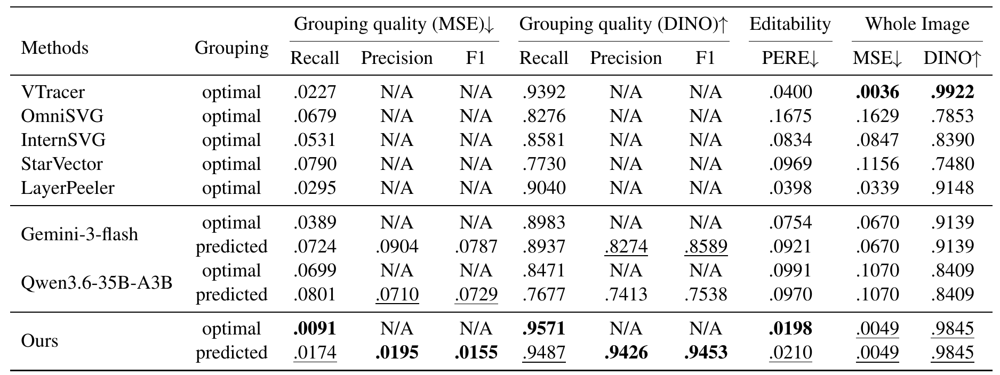
Image-to-SVG results on the Semantic SVG Benchmark. optimal denotes the theoretical upper bound obtained via post-hoc GT matching (only Recall is defined for flat baselines), while predicted evaluates natively generated structural metadata. Our purely predicted structures surpass the optimal bounds of every baseline in grouping quality and functional editability, reducing PERE by 47.5% relative to VTracer (0.0400 → 0.0210), while maintaining highly competitive whole-image fidelity.
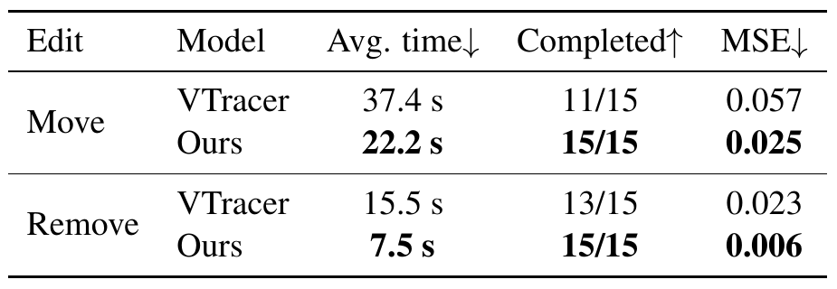
Human editability study. Participants reproduce move and remove edits on outputs of our method and VTracer. All edits on our SVGs were completed, roughly 1.9× faster, since an object can be manipulated as a single unit. The gain is largest for removal, where amodal inpainting restores the occluded regions (MSE 0.006 vs. 0.023).
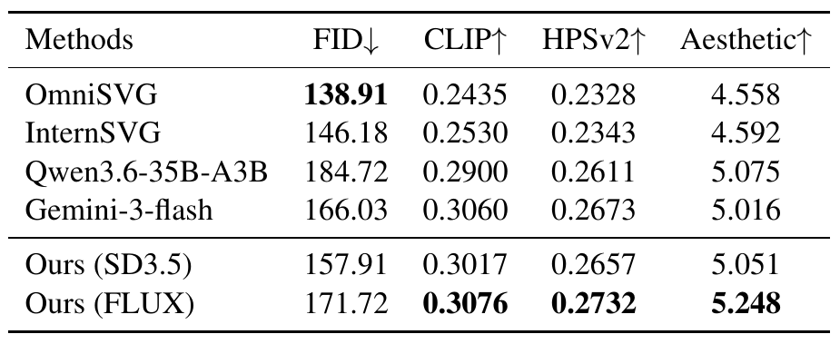
Text-to-SVG results on MMSVG-Bench. Both variants of our pipeline substantially outperform the baselines, with FLUX achieving the best CLIP, HPSv2, and Aesthetic scores. OmniSVG's lowest FID is an evaluation artifact, as the reference images are derived from its own training data.
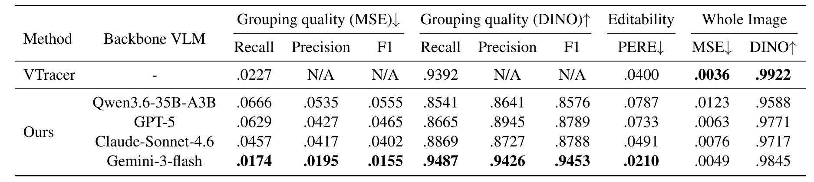
Ablation on the backbone VLM. Gemini-3-flash performs best across all metrics and Claude-Sonnet-4.6 follows. Structural quality closely tracks the spatial reasoning ability of the agent, since the backbone must localize sub-parts before the pipeline converts them into editable groups.
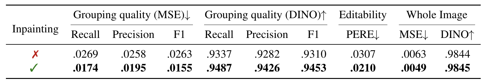
Ablation on the amodal inpainting module. Without inpainting, the pipeline degenerates into a mask-and-crop system that extracts only visible pixels. Enabling generative occlusion recovery improves every metric, most notably reducing Grouping F1 (MSE) by 41.1% and PERE by 31.6%.
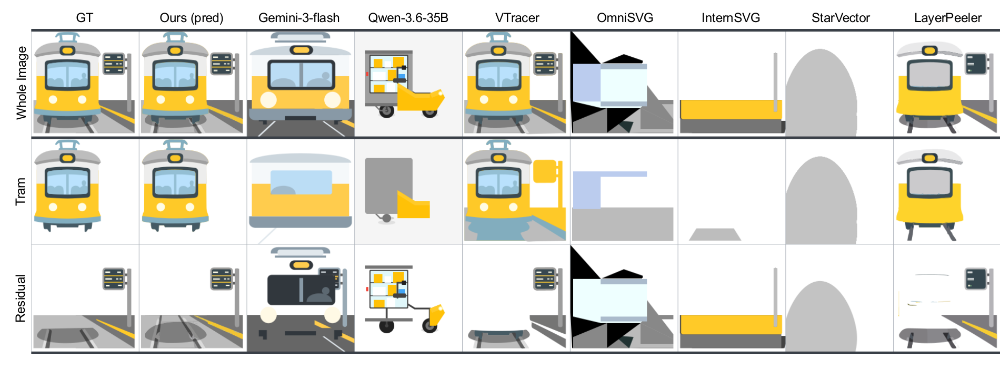
Image-to-SVG. For each method we show the whole image, the isolated semantic object, and the residual background. Ours (pred) is the group natively predicted by our model; for all other methods the object is rendered from paths selected by the optimal post-hoc grouping. Removing the tram exposes holes in VTracer's background and most baselines fail to reconstruct the target coherently, whereas our pipeline isolates the entity and recovers the occluded geometry through amodal inpainting.
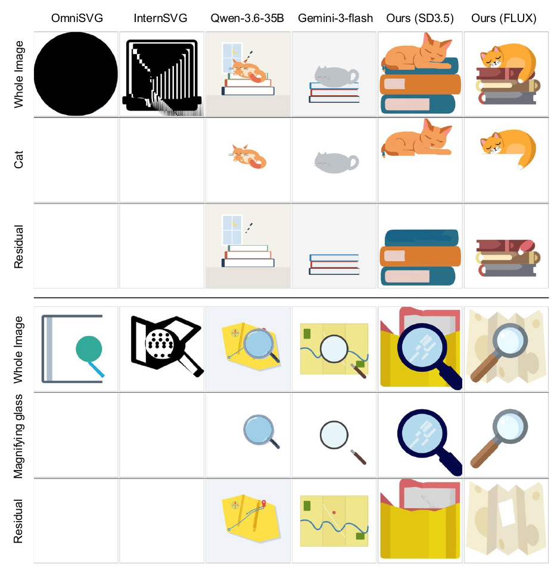
Text-to-SVG. Generated SVGs for the prompts "A cat sleeping on top of a stack of books" (top) and "A magnifying glass over a folded map" (bottom). OmniSVG and InternSVG produce no semantic grouping, so their object and residual rows are empty. Both of our variants synthesize the scene faithfully, and the background behind the foreground object remains structurally complete.
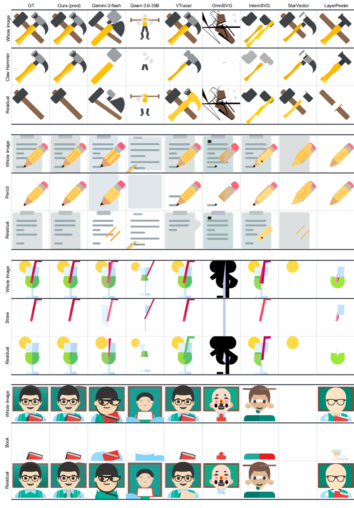
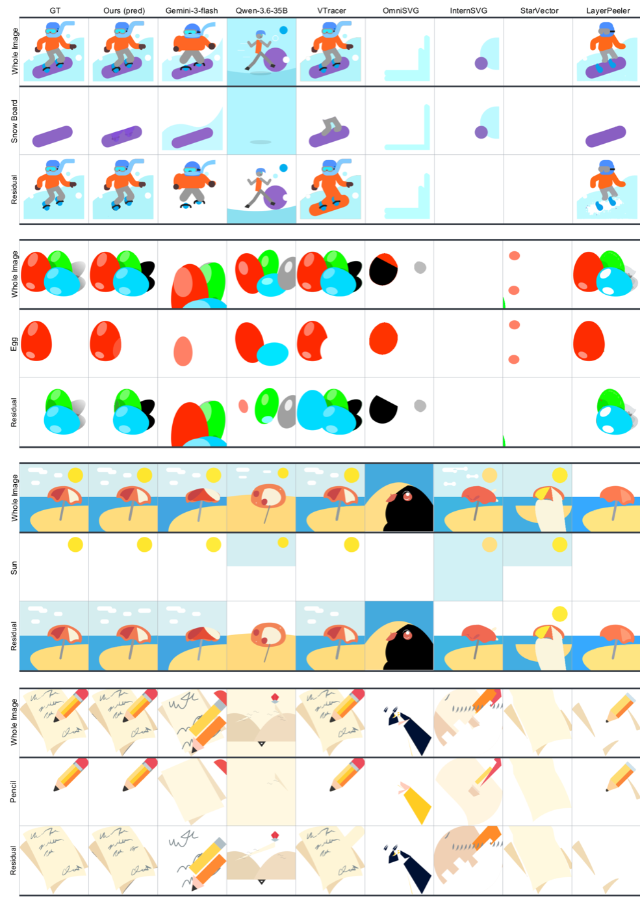
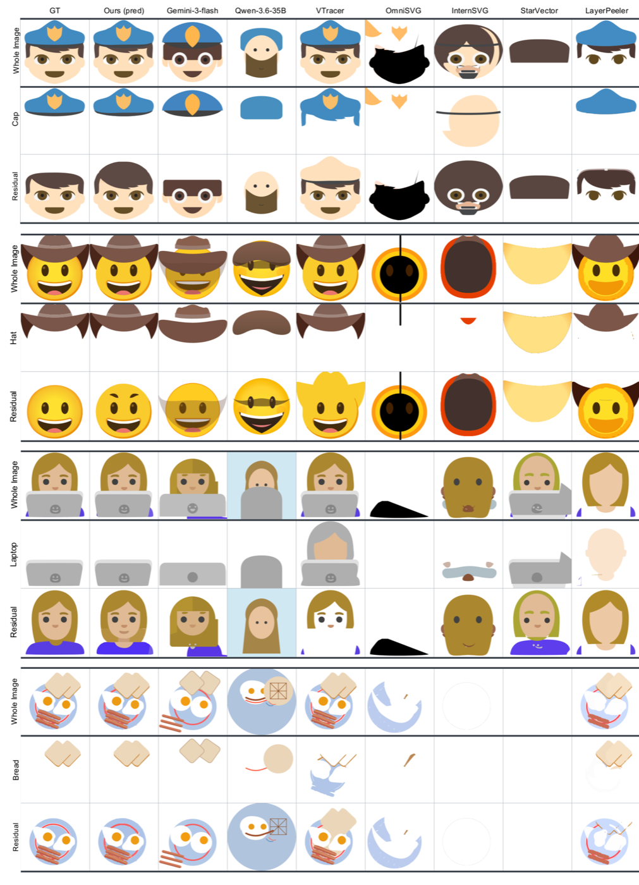
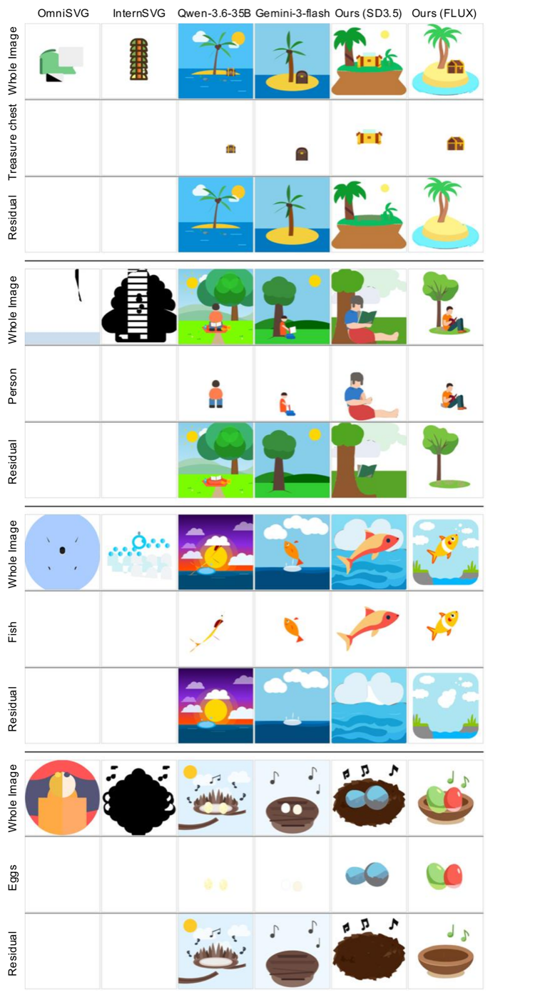
Prompts (top to bottom): "A small island with a palm tree and treasure chest", "A person reading a book under a tree", "A fish jumping from water into clouds", and "A bird's nest with two eggs and musical notes".